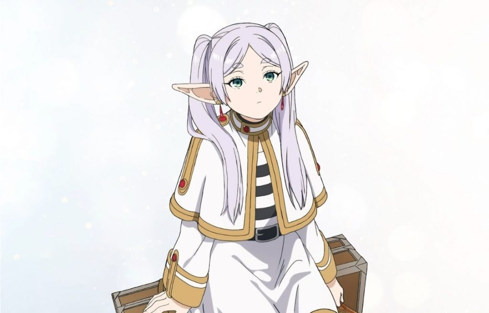
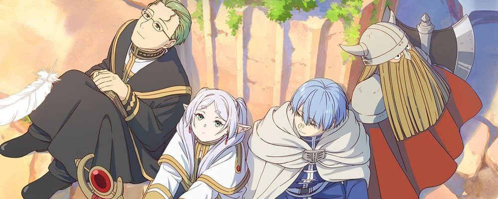

줄거리
마왕을 쓰러뜨리고 세상을 구한 영웅, 용사 일행.
그중 한 명인 엘프 마법사 '프리렌'은 인간과 달리 천 년 이상의 수명을 살아갑니다.
마왕 토벌 후 50년이 흘러 옛 동료들과 재회하지만, 짧은 수명을 가진 그들의 죽음을 차례로 지켜보며
프리렌은 '인간을 좀 더 알려고 노력하지 않았던' 자신의 과거를 후회하게 됩니다.
이후 프리렌은 영혼이 잠드는 곳 '오레올'에서 옛 동료 힘멜과 다시 만나기 위해,
새로운 동료들과 함께 과거의 발자취를 따라가는 두 번째 여정을 시작합니다.
주인공 프로필

프리렌 Frieren
- 종족 / 직업 엘프 / 마법사 (이명: 장송의 프리렌)
- 나이 1,000살 이상 (정확한 나이 불명)
- 성격
- 감정 기복이 적고 무덤덤하며 매사에 여유롭습니다.
- 냉정해 보이지만 은근히 정이 많고, 가끔은 어린아이처럼 엉뚱한 면모를 보입니다.
- 엄청난 귀차니스트로 아침에 스스로 일어나는 법이 거의 없습니다.
- 좋아하는 것
마도서 수집 (실용성 없는 기묘한 마법 모으기), 늦잠 자기, 옛 동료들과 함께했던 과거의 소중한 추억.
- 싫어하는 것
마족. 스승을 잃은 과거의 기억으로 인해 마족에게만큼은 일말의 자비도 없이 차갑고 냉혹합니다.
주인공 동료들
과거 : 용사 일행
